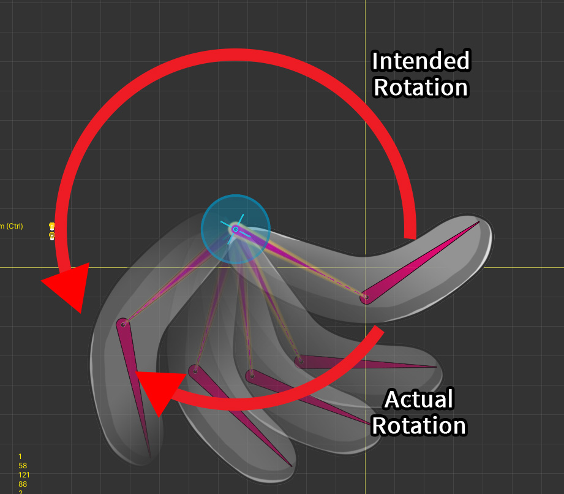

AnyPortrait > 메뉴얼 > Transform 모디파이어에서의 회전
Transform 모디파이어에서의 회전
1.3.4
"Transform (Controller)" 모디파이어의 객체 회전에 대하여 몇가지 이슈들에 대한 피드백을 받았습니다.
v1.3.4에서 크게 두가지로 정리하여 문제를 해결하였습니다.
하나는 애니메이션 편집에서 이미 도입되었던 "회전 각도 제한 해제"이며, 다른 하나는 "벡터에 의한 회전" 입니다.
회전 각도 제한을 해제하기
이 기능은 애니메이션 편집 시에 이미 존재한 기능을 그대로 가져온 것입니다. (관련 페이지)
이 페이지에서도 사용법을 간단히 소개합니다.

이 페이지에서 사용될 예제입니다.
본이 있으며, 여기에 1개의 메시가 연결되어 있습니다.
Transform (Controller) 모디파이어를 적용하였으며, 본을 회전시켜보겠습니다.

(1) 본을 선택하여 마우스를 이용하여 시계 반대 방향으로 회전하도록 만들고자 합니다.
(2) 그러나 180도를 넘어간 시점에서 갑자기 각도가 음수로 전환되는 것을 볼 수 있습니다.

이 상태에서 컨트롤 파라미터로 본을 움직여보면, 의도한 것은 시계 반대 방향의 회전이지만 실제로는 반대로 회전해버립니다.
AnyPortrait의 회전 기즈모에 기본적으로 "회전 각도 제한"이 설정되어 있기 때문입니다.
이것은 기즈모를 이용하여 객체를 회전할 경우, 그 값이 -180~+180로 제한되도록 만듭니다.
하지만 이 경우엔 그 제한을 해제하는 것이 필요합니다.

(1) 오른쪽 UI에서 180 버튼을 눌러서 무한 상태로 변경합니다.

(2) 다시 본을 시계 반대 방향으로 회전해봅시다.
(3) 이제 180도를 넘어도 값이 계속 증가하는 것을 볼 수 있습니다.

완성된 결과입니다.
의도한 대로 시계 반대 방향으로 회전하는 것을 볼 수 있습니다.
벡터에 의한 회전
이것은 다소 어려운 주제일 수 있습니다.
AnyPortrait에서 "회전값"을 보간할 때는 기본적으로 "회전되는 각도"를 그대로 이용합니다.
이것은 가장 명쾌한 방법이지만, 다음의 경우에 문제가 발생합니다.
- 각도 차이가 큰 2개 이상의 키들을 보간하는 경우
- 키들이 순환되어 연결된 경우
키프레임 기반의 애니메이션에서는 위의 상황이 발생하지 않습니다.
하지만 "Vector2 타입의 컨트롤 파라미터를 사용하는 Transform 모디파이어"에서는 위의 조건이 만족되어버리는 문제가 발생합니다.
이 문제를 해결하기 위해서는 "각도에 의한 회전"이 아닌 새로운 보간 기법이 필요합니다.

(1) "Transform (Controller) 모디파이어"가 추가되었습니다.
(2) Vector2 타입의 컨트롤 파라미터를 모디파이어에 등록하고, 모든 방향으로 키들을 추가했습니다.
(3) 본이 컨트롤 파라미터에 따라 전방향으로 이동 및 회전하도록 만들고자 합니다.

컨트롤 파라미터의 각 방향에 맞게 본이 움직이도록 만들었습니다.

(1) 컨트롤 파라미터의 값을 움직여보면 (2) 본은 그 방향에 맞게 잘 움직이는 것처럼 보입니다.

(1) 근데 일부 구간에서 (2) 본이 이상한 방향으로 한바퀴를 돌면서 이동하는 것을 볼 수 있습니다.
이 부분이 앞서 설명한 "각도에 의한 회전"의 문제점입니다.
이 문제를 해결하기 위해 "벡터에 의한 회전"이라는 새로운 기법이 v1.3.4에 추가되었습니다.

(1) 모디파이어의 설정에서 "Rotation by Angle" 버튼을 눌러서 "Rotation by Vector"로 변경합니다.

이제 컨트롤 파라미터를 움직여보면 본이 정상적으로 움직이는 것을 볼 수 있습니다.

"벡터에 의한 회전" 방식은 다른 접근법으로 보간을 수행합니다.
이 방식은 "각도"를 "벡터"로 한번 변환한 후, "가중치가 적용된 벡터 합"을 계산합니다.
그 후, "벡터 합 결과"를 다시 "각도"로 변환하는 과정을 거칩니다.
덕분에 키들이 순환하는 경우나, 2개 이상의 키들이 복잡하게 보간되는 경우에도 벡터 합이라는 직관적인 연산을 통해 값을 구할 수 있는 것입니다.
하지만 이 방식이 만능은 아닙니다.
각각의 방식이 가진 한계점을 확인해보세요.
"각도에 의한 회전"의 한계점
- 2개 이상의 키들이 있거나 순환되는 키들의 보간시 의도하지 않는 방향으로 회전할 수 있습니다.
"벡터에 의한 회전"의 한계점
- 두개의 키들이 정확히 180도를 이루는 등, 벡터 합이 0이 되는 경우엔 보간이 불가능한 경우가 있습니다.
- 벡터 합의 특성상, 모든 보간되는 회전은 180도 이내로 제한됩니다.
- 연산 방식이 복잡하므로 성능이 조금 떨어집니다.